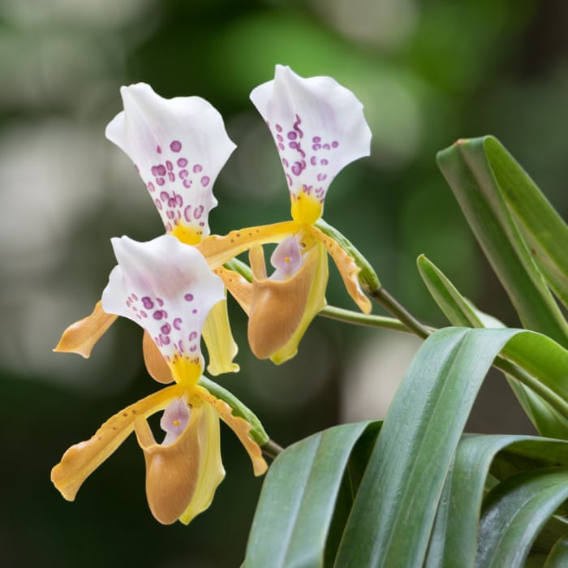

Tropske biljke
Početna
O nama
Vijesti
Galerija
Kontakt
Galerija
Paprati su jedna od najstarijih biljnih vrsta.
Monstera Deliciosa u prašumi.

Najpoznatije vrste Orhideja moguće je naći u tropskim djelovima.
Sansevieria je biljka porijeklom iz tropske zapadne Afrike.
Dracaena - najučinkovitija biljka u pročišćavanju zraka.
Alocasia Amazonika, također poznata kao Alocasia Polly, je biljka iz hibridnog uzgoja.
Zeleni ljiljan - Chlorophytum comosum često krasi razne interijere.
Zlatni puzavac se može uzgajati u vodi ili u zemlji.
Antrijum - također se naziva flamingov cvijet zbog svog jedinstvenog tropskog oblika.
Dieffenbachia je otporna vrsta koja može opstati u svim svjetlosnim uvjetima.